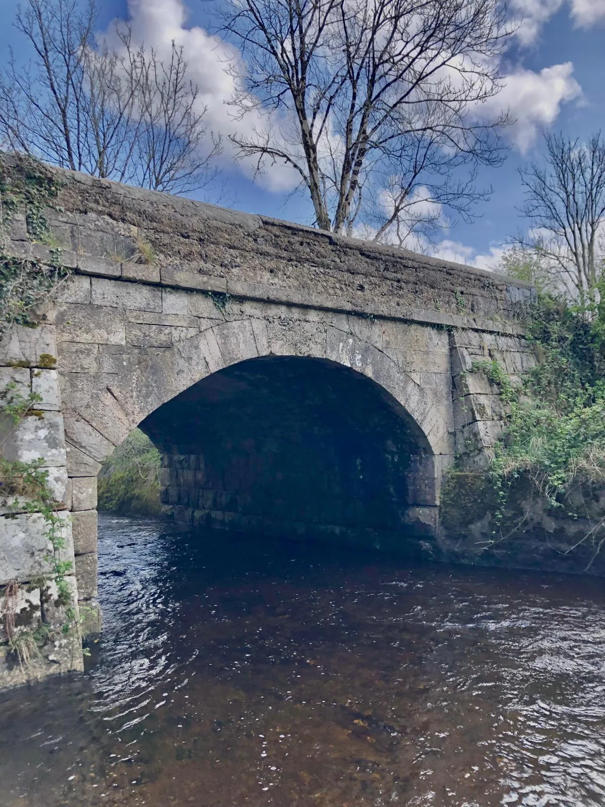

Ross
Ross in Irish is “An Ros” meaning wooded height or promontory. In the electoral division of Drumkeary it is 89.75 acres or 36.32 hectares in size.
In the 1841 census there were 43 people and 7 houses and in the 1851 census it was down to 27 people and 4 houses. The 1840 map had 16 houses or outbuildings. In the Griffith’s Valuation there were 4 houses and 4 landholders. In the 1901 census there were 4 residences and 23 inhabitants and in the 1911 census there were 4 houses and 17 inhabitants in Ross.
From the late 19th century and for a large part of the 20th century, Ross had a tailors workshop (Moloney’s) and a forge ( Rourke’s) making it a lively and vibrant townland. In the evenings the workshop became a centre of traditional music sessions, another part of the great traditional Irish music culture in Ballinakill and surrounding areas.

Ross borders Barratoor, Bridgepark, Inchy, Kyleaglannawood, Lisheeny and Tonroe.
Map
Placenames
| Name | Type | Notes |
|---|---|---|
| The Ross River | river | |
| Below the Road | field | |
| The Bottom of Cregg | field | |
| The Bridge Park | field | |
| The Well Park | field | |
| The Lime Kiln Field | field | |
| Gleann | field | Pronounced “Glann”. |
| The New Piece | field | |
| Calves Field | field | |
| Behind the House | field | |
| The Hill | field | |
| Cregg | field | Also pronounced “Cragg”. |
| Móin Bhearnach | field | Pronounced “Monevarnach”. |
| The Forge Garden | field | |
| The Haggard | field | |
| Above the Road | field | |
| Gáirdín na Sceacha | field | |
| The Hill Field/The Tillage Field | field | |
| Campbell’s | field | |
| The Long Piece | field | |
| Pat’s Piece | field | Pat Moylan. |
| Coarse | field | Pronounced “Coorse”. |
| The Furry Place | field |
Houses
| Name | Notes |
|---|---|
| Shiel’s House | Ned Shiel. |
| Moylan’s House | |
| Haugh’s House | Sean Haugh. |
Buildings
| Name | Notes |
|---|---|
| Tailor’s Workshop | |
| The Forge |